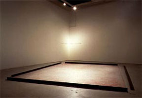

Miscellaneous material
Charles Eames: Blacktop (1952). 10'47".
This film shows the shapes produced
by the movement of soapy water across an asphalt surface. Don
Albinson controlled the hose and movement of the water. Eames
edited the film and synchronized it to Bach's Goldberg Variations
on the basis of visual cues from the film's optical track.
Jan Henderikse: The San Pedro Art Project, 1973. (Three
artificial lakes.)
Wolfgang Mally: Paper in Water 0-58 Days, 1977/1978.
Mally placed 365 sheets of paper
in water, earth and air, and removed one sheet every day. (Dorothea
Eimert: PaperArt, Geschichte der Papierkunst. Wienand Verlag,
1994.) (Cf. Marcel Duchamp: Readymade
Malheureux, 1919; and some pieces by Yves Klein.)
Jan Henderikse: Ice, 1981.

Yukinori Yanagi: Wandering
Position, 1995.
"The plan for Wandering
Position, which will be executed on-site, is to set an ant free
within a square area surrounded by a steel frame. The artist
will follow the ant and trace his own footsteps in pastel. Only
the size and position of the enclosure are to be determined
by the artist. The rest will be drawn according to the ant's
'will'."
Asa Elzen: Communiejurkje, 1998.
A glass container with water
and salt. The water dries out and leaves a pattern of salt crystals.
(Catalogue Flexible 3, Close to the Body. Nederlands Textielmuseum,
Tilburg - 2000.)
Trace of pendulum in sand during
earthquake.
Ken Goldberg, Randall Packer, Wojciech Matusik and Gregory
Kuhn: Mori,
2001.
Ongoing display of earth movements in Berkeley,
CA.
Wim van Egmond, Loes Modderman, Spike Walker, Karl E. Deckart: Photomicrographs.
Reference
Jan Henderikse: Photo. Installations 1960-1992. Almere:
Directie Kunstzaken / Amsterdam: Galerie . Apunto, 1992, pp. 15,
18-19, 47.
|